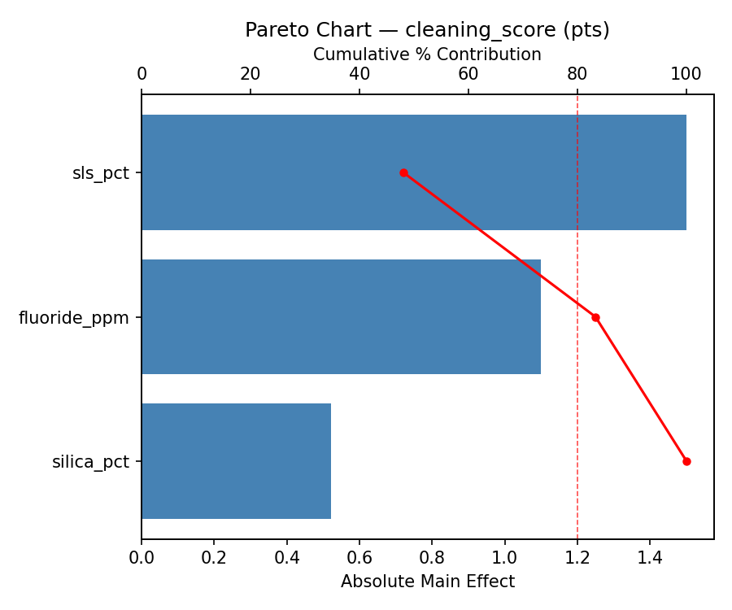
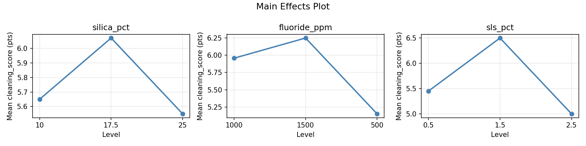
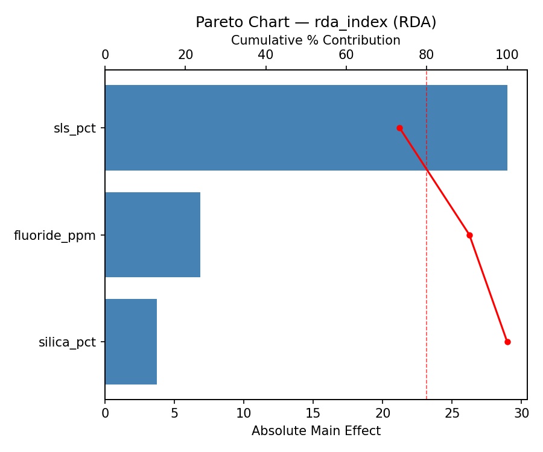
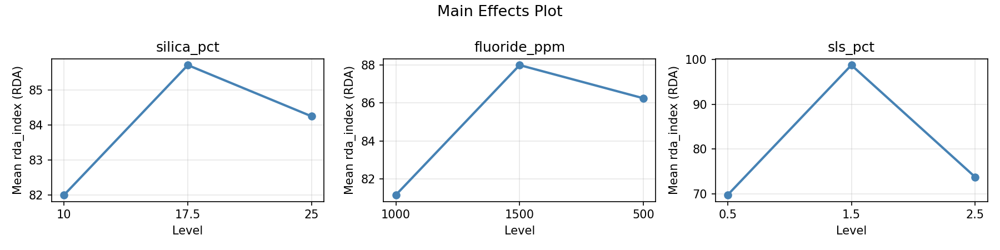
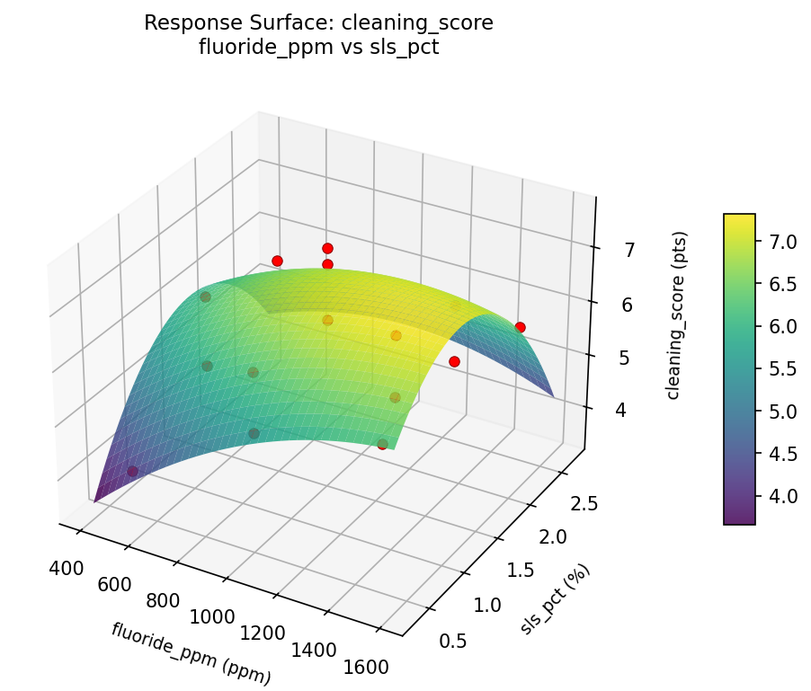
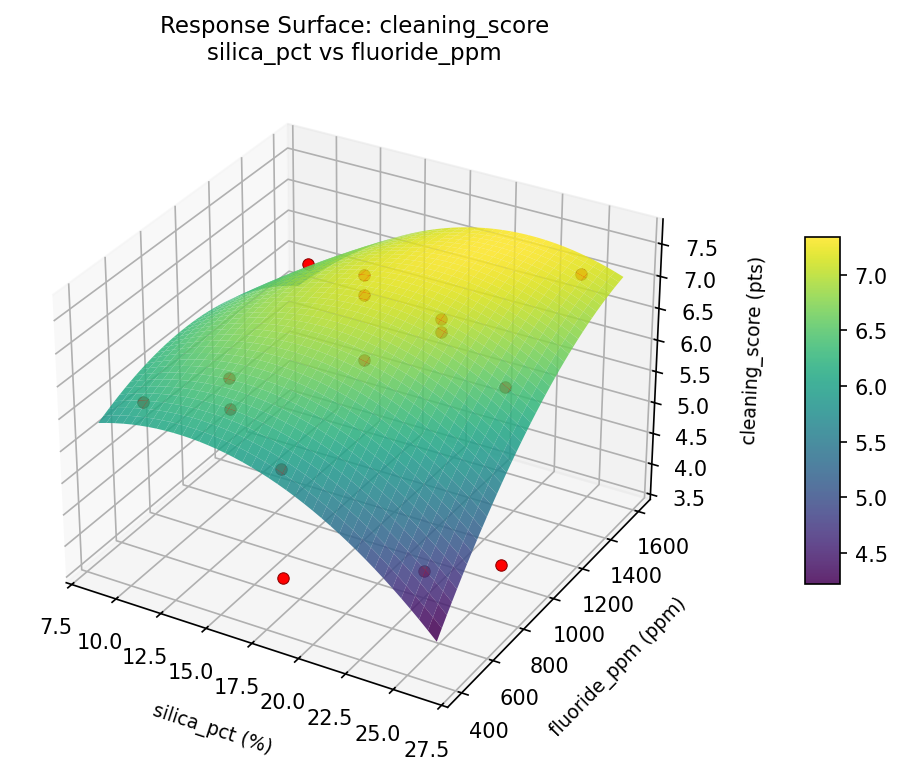
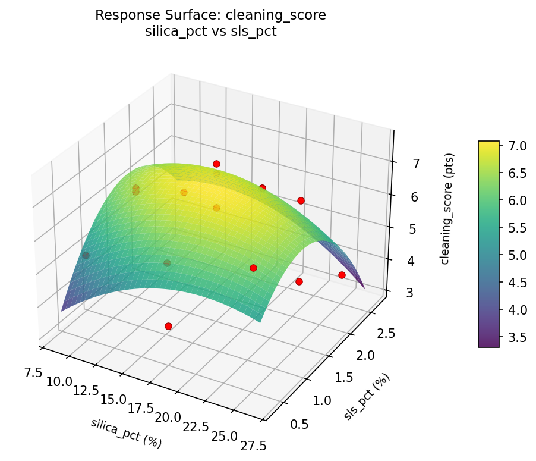
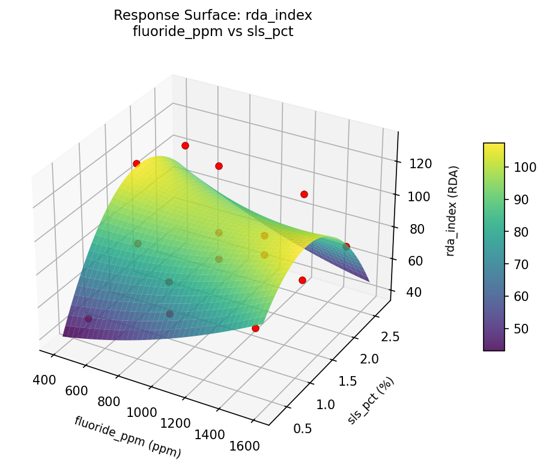
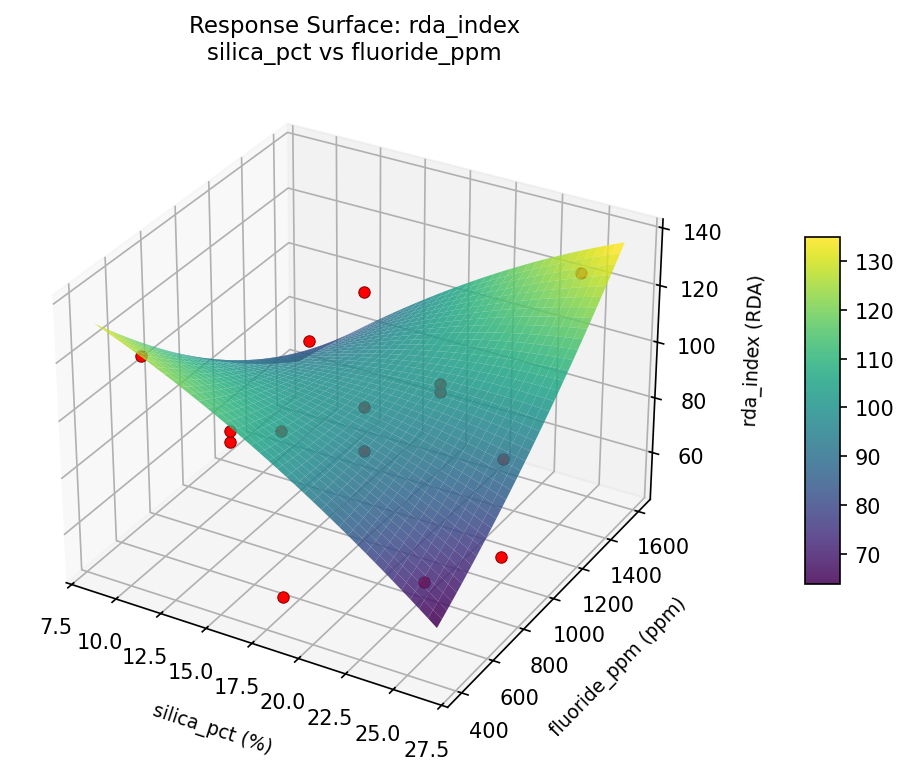
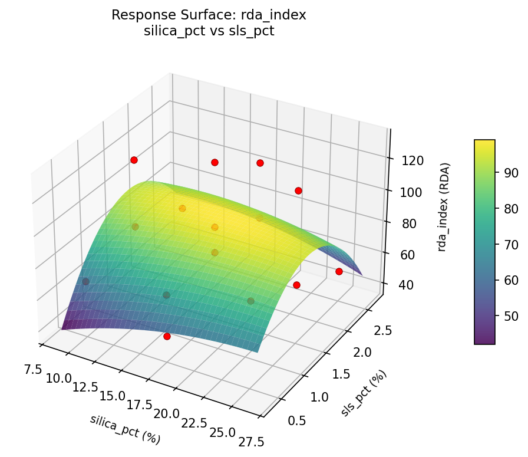

Experimental Setup
Factors
| Factor | Low | High | Unit |
|---|
silica_pct | 10 | 25 | % |
fluoride_ppm | 500 | 1500 | ppm |
sls_pct | 0.5 | 2.5 | % |
Fixed: flavor = mint, ph = 7.0
Responses
| Response | Direction | Unit |
|---|
cleaning_score | ↑ maximize | pts |
rda_index | ↓ minimize | RDA |
Configuration
{
"metadata": {
"name": "Toothpaste Cleaning Power",
"description": "Box-Behnken design to maximize cleaning efficacy and minimize abrasion by tuning silica abrasive content, fluoride concentration, and foam agent level"
},
"factors": [
{
"name": "silica_pct",
"levels": [
"10",
"25"
],
"type": "continuous",
"unit": "%"
},
{
"name": "fluoride_ppm",
"levels": [
"500",
"1500"
],
"type": "continuous",
"unit": "ppm"
},
{
"name": "sls_pct",
"levels": [
"0.5",
"2.5"
],
"type": "continuous",
"unit": "%"
}
],
"fixed_factors": {
"flavor": "mint",
"ph": "7.0"
},
"responses": [
{
"name": "cleaning_score",
"optimize": "maximize",
"unit": "pts"
},
{
"name": "rda_index",
"optimize": "minimize",
"unit": "RDA"
}
],
"settings": {
"operation": "box_behnken",
"test_script": "use_cases/225_toothpaste_formulation/sim.sh"
}
}
Experimental Matrix
The Box-Behnken Design produces 15 runs. Each row is one experiment with specific factor settings.
| Run | silica_pct | fluoride_ppm | sls_pct |
|---|
| 1 | 17.5 | 500 | 0.5 |
| 2 | 17.5 | 1000 | 1.5 |
| 3 | 25 | 1000 | 2.5 |
| 4 | 25 | 1000 | 0.5 |
| 5 | 17.5 | 1000 | 1.5 |
| 6 | 17.5 | 1000 | 1.5 |
| 7 | 10 | 1000 | 2.5 |
| 8 | 25 | 500 | 1.5 |
| 9 | 17.5 | 500 | 2.5 |
| 10 | 25 | 1500 | 1.5 |
| 11 | 10 | 1000 | 0.5 |
| 12 | 17.5 | 1500 | 2.5 |
| 13 | 10 | 500 | 1.5 |
| 14 | 10 | 1500 | 1.5 |
| 15 | 17.5 | 1500 | 0.5 |
Step-by-Step Workflow
1
Preview the design
$ python doe.py info --config use_cases/225_toothpaste_formulation/config.json
2
Generate the runner script
$ python doe.py generate --config use_cases/225_toothpaste_formulation/config.json \
--output use_cases/225_toothpaste_formulation/results/run.sh --seed 42
3
Execute the experiments
$ bash use_cases/225_toothpaste_formulation/results/run.sh
4
Analyze results
$ python doe.py analyze --config use_cases/225_toothpaste_formulation/config.json
5
Get optimization recommendations
$ python doe.py optimize --config use_cases/225_toothpaste_formulation/config.json
6
Generate the HTML report
$ python doe.py report --config use_cases/225_toothpaste_formulation/config.json \
--output use_cases/225_toothpaste_formulation/results/report.html
Features Exercised
| Feature | Value |
|---|
| Design type | box_behnken |
| Factor types | continuous (all 3) |
| Arg style | double-dash |
| Responses | 2 (cleaning_score ↑, rda_index ↓) |
| Total runs | 15 |
Analysis Results
Generated from actual experiment runs using the DOE Helper Tool.
Response: cleaning_score
Top factors: sls_pct (48.1%), fluoride_ppm (35.2%), silica_pct (16.7%).
Pareto Chart

Main Effects Plot

Response: rda_index
Top factors: sls_pct (73.3%), fluoride_ppm (17.3%), silica_pct (9.4%).
Pareto Chart

Main Effects Plot

Response Surface Plots
3D surfaces fitted with quadratic RSM. Red dots are observed data points.
cleaning score fluoride ppm vs sls pct

cleaning score silica pct vs fluoride ppm

cleaning score silica pct vs sls pct

rda index fluoride ppm vs sls pct

rda index silica pct vs fluoride ppm

rda index silica pct vs sls pct

Full Analysis Output
RSM surface: rsm_cleaning_score_silica_pct_vs_fluoride_ppm.png
RSM surface: rsm_cleaning_score_silica_pct_vs_sls_pct.png
RSM surface: rsm_cleaning_score_fluoride_ppm_vs_sls_pct.png
RSM surface: rsm_rda_index_silica_pct_vs_fluoride_ppm.png
RSM surface: rsm_rda_index_silica_pct_vs_sls_pct.png
RSM surface: rsm_rda_index_fluoride_ppm_vs_sls_pct.png
=== Main Effects: cleaning_score ===
Factor Effect Std Error % Contribution
--------------------------------------------------------------
sls_pct 1.5000 0.2935 48.1%
fluoride_ppm 1.1000 0.2935 35.2%
silica_pct 0.5214 0.2935 16.7%
=== Summary Statistics: cleaning_score ===
silica_pct:
Level N Mean Std Min Max
------------------------------------------------------------
10 4 5.6500 0.6137 4.9000 6.2000
17.5 7 6.0714 1.1898 4.0000 7.6000
25 4 5.5500 1.5927 3.7000 7.2000
fluoride_ppm:
Level N Mean Std Min Max
------------------------------------------------------------
1000 7 5.9571 1.3806 3.7000 7.6000
1500 4 6.2500 0.6658 5.7000 7.2000
500 4 5.1500 0.9399 4.0000 6.1000
sls_pct:
Level N Mean Std Min Max
------------------------------------------------------------
0.5 4 5.4500 1.0661 4.0000 6.5000
1.5 7 6.5000 0.9592 4.8000 7.6000
2.5 4 5.0000 0.9452 3.7000 5.7000
=== Main Effects: rda_index ===
Factor Effect Std Error % Contribution
--------------------------------------------------------------
sls_pct 28.9643 6.6945 73.3%
fluoride_ppm 6.8571 6.6945 17.3%
silica_pct 3.7143 6.6945 9.4%
=== Summary Statistics: rda_index ===
silica_pct:
Level N Mean Std Min Max
------------------------------------------------------------
10 4 82.0000 25.2587 64.0000 119.0000
17.5 7 85.7143 26.7626 49.0000 131.0000
25 4 84.2500 32.4795 52.0000 128.0000
fluoride_ppm:
Level N Mean Std Min Max
------------------------------------------------------------
1000 7 81.1429 25.7257 52.0000 131.0000
1500 4 88.0000 26.7457 72.0000 128.0000
500 4 86.2500 32.4281 49.0000 119.0000
sls_pct:
Level N Mean Std Min Max
------------------------------------------------------------
0.5 4 69.7500 15.9034 49.0000 87.0000
1.5 7 98.7143 26.5500 70.0000 131.0000
2.5 4 73.7500 23.6414 52.0000 107.0000
Pareto chart (cleaning_score): use_cases/225_toothpaste_formulation/results/analysis/pareto_cleaning_score.png
Pareto chart (rda_index): use_cases/225_toothpaste_formulation/results/analysis/pareto_rda_index.png
Main effects (cleaning_score): use_cases/225_toothpaste_formulation/results/analysis/main_effects_cleaning_score.png
Main effects (rda_index): use_cases/225_toothpaste_formulation/results/analysis/main_effects_rda_index.png
Optimization Recommendations
=== Optimization: cleaning_score ===
Direction: maximize
Best observed run: #3
silica_pct = 17.5
fluoride_ppm = 1000
sls_pct = 1.5
Value: 7.6
RSM Model (linear, R² = 0.1196, Adj R² = -0.1205):
Coefficients:
intercept +5.8200
silica_pct -0.3125
fluoride_ppm -0.1500
sls_pct -0.3875
RSM Model (quadratic, R² = 0.3136, Adj R² = -0.9219):
Coefficients:
intercept +6.6000
silica_pct -0.3125
fluoride_ppm -0.1500
sls_pct -0.3875
silica_pct*fluoride_ppm +0.0500
silica_pct*sls_pct +0.3250
fluoride_ppm*sls_pct -0.0500
silica_pct^2 -0.8125
fluoride_ppm^2 -0.1875
sls_pct^2 -0.4625
Curvature analysis:
silica_pct coef=-0.8125 concave (has a maximum)
sls_pct coef=-0.4625 concave (has a maximum)
fluoride_ppm coef=-0.1875 concave (has a maximum)
Notable interactions:
silica_pct*sls_pct coef=+0.3250 (synergistic)
Predicted optimum (from linear model):
silica_pct = 10
fluoride_ppm = 1000
sls_pct = 0.5
Predicted value: 6.5200
Model quality: Weak fit — consider adding center points or using a different design.
Factor importance:
1. silica_pct (effect: 1.1, contribution: 50.0%)
2. sls_pct (effect: 0.8, contribution: 36.1%)
3. fluoride_ppm (effect: 0.3, contribution: 13.9%)
=== Optimization: rda_index ===
Direction: minimize
Best observed run: #11
silica_pct = 25
fluoride_ppm = 1000
sls_pct = 2.5
Value: 49.0
RSM Model (linear, R² = 0.0418, Adj R² = -0.2195):
Coefficients:
intercept +84.3333
silica_pct -4.8750
fluoride_ppm -0.6250
sls_pct +5.0000
RSM Model (quadratic, R² = 0.5092, Adj R² = -0.3743):
Coefficients:
intercept +108.3333
silica_pct -4.8750
fluoride_ppm -0.6250
sls_pct +5.0000
silica_pct*fluoride_ppm +0.5000
silica_pct*sls_pct +3.2500
fluoride_ppm*sls_pct -1.7500
silica_pct^2 -33.9167
fluoride_ppm^2 -3.4167
sls_pct^2 -7.6667
Curvature analysis:
silica_pct coef=-33.9167 concave (has a maximum)
sls_pct coef=-7.6667 concave (has a maximum)
fluoride_ppm coef=-3.4167 concave (has a maximum)
Notable interactions:
silica_pct*sls_pct coef=+3.2500 (synergistic)
fluoride_ppm*sls_pct coef=-1.7500 (antagonistic)
silica_pct*fluoride_ppm coef=+0.5000 (synergistic)
Predicted optimum (from linear model):
silica_pct = 10
fluoride_ppm = 1000
sls_pct = 2.5
Predicted value: 94.2083
Model quality: Weak fit — consider adding center points or using a different design.
Factor importance:
1. silica_pct (effect: 38.0, contribution: 77.2%)
2. sls_pct (effect: 10.0, contribution: 20.3%)
3. fluoride_ppm (effect: 1.2, contribution: 2.5%)